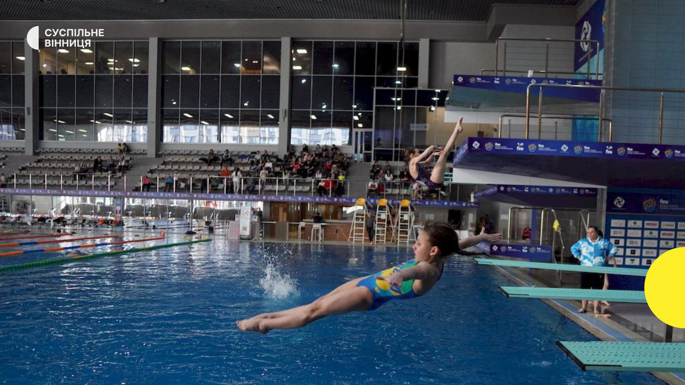
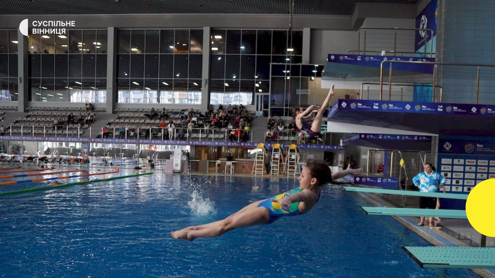
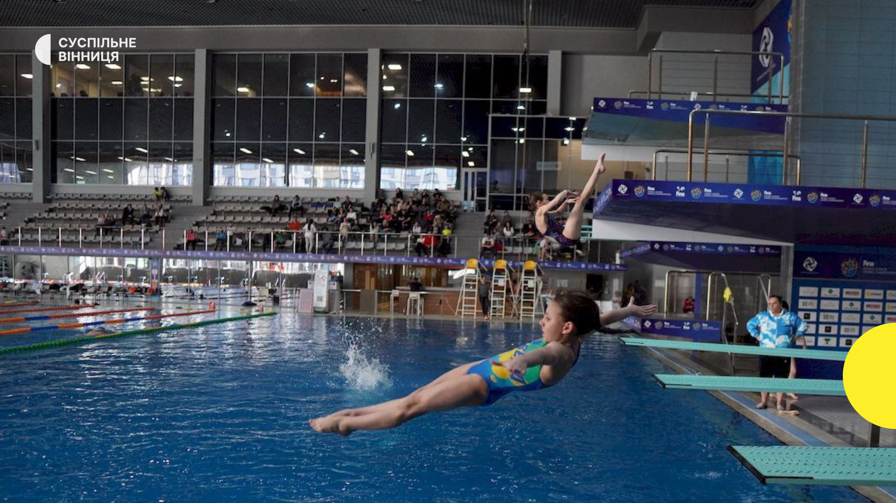

⬆

Стрибки́ у во́ду — один з водних видів спорту. На змаганнях виконуються стрибки з трампліна (1 і 3 метри) і вишки (5, 7,5 і 10 метрів). Під час стрибка спортсмени виконують ряд акробатичних дій (оберти, гвинти, обертання). Суддями оцінюється як якість виконання акробатичних елементів у польотній фазі, так і чистота входу у воду. На змаганнях із синхронних стрибків оцінюється також синхронність виконання елементів двома учасниками.
Змагання зі стрибків у воду проводяться Міжнародною аматорською федерацією плавання (FINA). Стрибки у воду входять до програми чемпіонатів світу з водних видів спорту. Стрибки у воду є олімпійським видом спорту. У програму Олімпійських ігор стрибки у воду включені вперше на третіх Олімпійських іграх в 1904 році, і відтоді постійно присутні на Олімпіадах. Синхронні стрибки з'явилися в програмі Ігор у Сіднеї в 2000 році. У наш час[коли?] Олімпійська програма охоплює 8 комплектів медалей, по 4 комплекти розігруються у чоловіків і в жінок у стрибках з 3-метрового трампліна (одиночні і синхронні) та 10-метрової вежі (одиночні і синхронні). Програма чемпіонатів світу і Європи складається з 10 змагань, додатково охоплює індивідуальні стрибки з метрового трампліна.
Великі змагання, включаючи Олімпіади і чемпіонати світу, проводяться трьома етапами. Після першого, кваліфікації, визначаються 18 найкращих учасників, які у півфінальній серії стрибків виявляють 12 фіналістів. Оцінки, отримані у фіналі, раніше підсумовувалися з оцінками півфіналу, однак з 2007 року нові правила FINA передбачають починати фінал «з нуля». На кожному етапі спортсмени виконують по черзі 5 або 6 стрибків, залежно від формули турніру. Перед початком кожного етапу спортсмени заявляють програму стрибків, а судді стверджують коефіцієнт складності для кожного стрибка. По ходу змагання замінювати один стрибок іншим або змінювати порядок їх виконання не дозволяється.
В індивідуальних змаганнях оцінка кожного стрибка проводиться сімома суддями. Кожен з них виставляє оцінки від 0 до 10, після чого дві найкращі та дві найгірші оцінки відкидаються, а три, які залишились, множаться на коефіцієнт складності стрибка.
Синхронні стрибки оцінює колегія з 9 арбітрів, по двоє суддів оцінюють техніку виконання стрибка кожним спортсменом, а ще п'ять оцінюють лише синхронність. Після чого найгірша і найкраща оцінки відкидаються, а сума інших множиться на коефіцієнт складності.
При оцінці техніки стрибка судді звертають увагу на якість розбігу або вихідної позиції (розбіг повинен бути виконаний по прямій лінії та мати мінімум 4 кроки, стійка повинна бути чітко зафіксована), відштовхування, виконання елементів під час польоту, вхід у воду (повинен бути максимально вертикальним і з мінімальною кількістю бризок).
Стрибки з трампліна входили до програми всіх Зимових Олімпіад, але змагання проводилися тільки серед чоловіків. Перед іграми у Ванкувері спортсменки організували кампанію за включення до програми Олімпіад також і жіночих змагань, звертаючись навіть до суду. Однак їхні зусилля не мали успіху.
На Олімпіадах проводяться індивідуальні змагання зі стрибків з двох трамплінів різної висоти: нормального трампліна і високого трампліна. Нормальний трамплін має розрахункову лінію в районі 90 м, високий — 120 м. Крім індивідуальних змагань проводяться також командні змагання зі стрибків з високого трампліна.